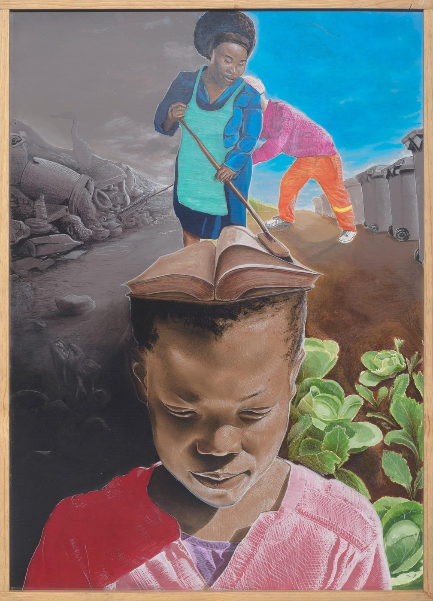

Story
Mohau “Ravaza” Lethae
Printmaker, painter, and observer — working in the vigour of the cross-hatched line.

Mohau was born in the Vaal, in Vanderbijlpark. In 2020 he completed a diploma in printmaking at Artist Proof Studio, majoring in lino cut and dry point — the print disciplines that still shape the cross-hatched, hand-built line running through almost everything he makes.
His work centres on social commentary and collective memory: portraits of elders and children, self-portraits, and pieces built directly from life around him in the Vaal and in Orange Farm, where he currently lives.
Since 2018 he has taken part in the quarterly “Back to Basics” poetry and visual arts exhibitions. In 2025 he was selected as a Sasol New Signatures finalist, exhibiting at the Pretoria Art Museum.
Project Thuthukani
The story behind his 2025 Sasol New Signatures piece.
“Through community and love, mountains can be moved.”— from the artist's statement submitted to the Sasol New Signatures jury
Entered jointly with fellow artist Molefi Sylvester Moorosi, this piece grew out of Project Thuthukani — a youth-led initiative, started in 2019 near Evaton West, that mobilised the community to clear a longstanding illegal dumpsite. Waste education and organising replaced years of failed individual clean-ups with community gardens, small businesses, and volunteer stipends funded by recycled paper.
In the painting, the foreground figure — a mother sweeping over an open book resting on a child's head — represents the present shaping what a child's mind can become; the background moves from a grey, trash-choked scene into a living, working one.
Source: the artist's statement published by Sasol New Signatures for the 2025 finalist exhibition.
Mentorship & community
Mentor and artist in Orange Farm, who taught Mohau the value of archiving work and making original art.
Mohau facilitates drawing lessons and art competitions for children in the community.
Ongoing participant in the quarterly poetry and visual arts exhibition series since 2018.
Biographical details above are supplied by the artist. The Sasol New Signatures finalist status and the Project Thuthukani statement are independently confirmed via Sasol New Signatures' own published finalist listing.